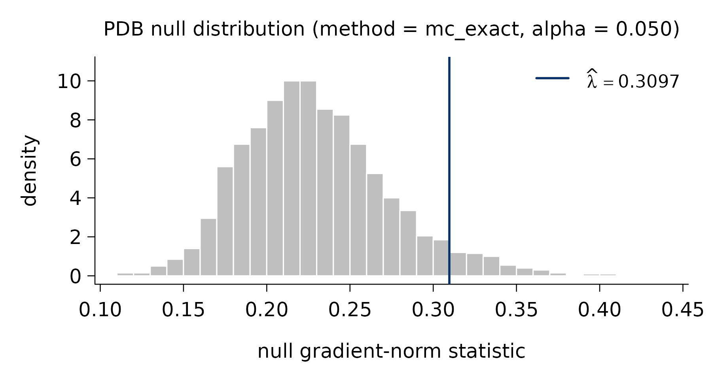

This page explains the idea behind the Pivotal Information
Criterion (PIC) and, in particular, how picreg
chooses the regularization parameter \lambda without
cross-validation. The formal statements and proofs live in the companion
paper, Sardy, van Cutsem and
van de Geer (2026); here we keep the exposition deliberately
intuitive.
Sparse models and the tuning problem
Most sparse estimators solve a penalized problem of the form
\hat{\boldsymbol\beta}(\lambda) \;=\; \arg\min_{\boldsymbol\beta}\; L(\boldsymbol\beta) \;+\; \lambda \, \mathrm{pen}(\boldsymbol\beta),
where L measures fit and \mathrm{pen} shrinks coefficients toward zero. The single knob \lambda \ge 0 controls how many variables survive: larger \lambda means a sparser model. Everything hinges on how \lambda is chosen.
The default answer in practice is cross-validation (CV). But CV optimizes out-of-sample prediction error - which is not the same target as recovering the true set of active variables. A model can predict well while including many spurious predictors, and the CV-optimal \lambda is typically far too small for selection, letting noise variables in. This selection-versus- prediction distinction is well documented in the model-selection literature.
Fixing \lambda at the detection boundary
PIC takes a different route: it fixes \lambda at the detection boundary: the smallest penalty level that, in the absence of any signal, leaves the gradient of the fit term below the penalty and therefore returns the empty model. Equivalently, this is the smallest \lambda that makes the origin \boldsymbol\beta = \mathbf 0 a local minimum of the penalized objective under the null H_0:\boldsymbol\beta = \mathbf 0.
Formally, consider the gradient-norm statistic of the (transformed) loss at the origin,
\Lambda \;=\; \left\| \nabla_{\boldsymbol\beta}\,(\phi \circ \ell_n)\bigl(g(\hat\beta_0 \mathbf 1), \hat\sigma; (X, Y_0)\bigr) \right\|_\infty, where Y_0 is drawn under H_0 and the nuisance parameters are set to their maximum-likelihood estimates. The detection boundary is the upper \alpha-quantile of \Lambda,
\lambda_\alpha^{\mathrm{DB}} \;=\; q_{1-\alpha}(\Lambda),
so that, by construction, \mathbb P_{H_0}(\hat{\boldsymbol\beta} = \mathbf 0) = 1 - \alpha. In words: choose the smallest \lambda that keeps pure noise from being selected with probability 1-\alpha. The level \alpha (default 0.05) plays the role of a nominal false-discovery level under the null. Choosing \lambda < \lambda_\alpha^{\rm PDB} floods the model with false positives, whereas \lambda > \lambda_\alpha^{\rm PDB} needlessly misses true signals.
Why “pivotal”
The transformations (\phi, g) -
family-specific and built into picreg - are chosen
precisely so that the distribution of \Lambda is (asymptotically)
pivotal: free of the unknown nuisance parameters (the
intercept \beta_0 and scale \sigma). As a consequence the quantile \lambda_\alpha^{\mathrm{PDB}} — the
pivotal detection boundary — depends only on the design matrix
X, the family, and the level \alpha, never on the observed
response \mathbf y. It can
therefore be computed before fitting (and reused across
penalties). Because the choice is calibrated for selection
rather than prediction, PIC typically achieves sharper support recovery
than CV-tuned competitors - and, under standard sparsity assumptions, a
sharp phase transition for exact recovery, a phenomenon well
documented in the compressed-sensing literature.
The companion paper, Sardy, van Cutsem and van de Geer (2026), gives a table listing the base loss \ell_n and the associated pair (\phi, g) for each of the six families.
Computing the boundary in practice
picreg offers three ways to obtain the quantile of \Lambda, via the lambda_method
argument of pic():
-
"mc_exact"(default): family-aware Monte Carlo — the most accurate, ideal for small to moderate problems. -
"mc_gaussian": a CLT-based Gaussian approximation of the gradient, essentially equivalent once n is moderately large and noticeably faster. -
"analytical": a closed-form Bonferroni bound, deterministic and O(1), for very large-scale problems.
The diagnostic pdb_asymptotic() lets you visualize how
the three agree as n grows.
Seeing it on data
pdb_summary() reports the selector and the simulated
null distribution from which \hat\lambda_\alpha^{\mathrm{PDB}} is read
off:
pdb_summary(fit)
#> PDB lambda selector
#> -------------------
#> method : mc_exact
#> alpha : 0.05
#> n_simu : 2,000
#> lambda_hat : 0.3097
#>
#> Null distribution:
#> min q05 q25 median q75 q95 max
#> 0.1124 0.1678 0.1989 0.2252 0.2547 0.3092 0.4344
#>
#> mean = 0.2294 sd = 0.0438Plotting the lambda_pdb component shows that null
distribution with the selected \hat\lambda marked — the value at which
pure-noise gradients are exceeded only with probability \alpha:
plot(fit$lambda_pdb)
That single, response-independent threshold is the whole point: no grid, no folds, no re-fitting — just a calibrated boundary tuned for variable selection.